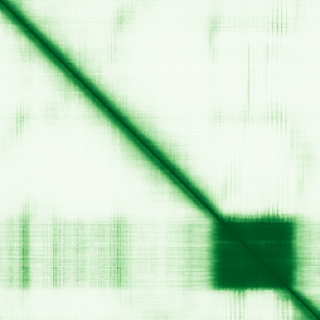

type: protein-evaluation gene: "MEOX1" date: 2026-05-30 tags: [protein-scout, nuclear-protein, evaluation] status: scored ---
MEOX1 核蛋白评估报告
1. 基本信息
| 项目 | 内容 |
|---|---|
| 基因名 / 别名 | MEOX1 / MOX1 |
| 蛋白大小 | 254 aa / 28.0 kDa |
| UniProt ID | P50221 |
| 评估日期 | 2026-05-30 |
2. 评分总览
| 维度 | 得分 | 满分 | 加权后 | 关键证据摘要 |
|---|---|---|---|---|
| 🔴 核定位特异性 | 8/10 | ×4 | 32 | Nucleus + Cytoplasm (UniProt), GO: chromatin, nucleus |
| 📏 蛋白大小 | 10/10 | ×1 | 10 | 254 aa, 28.0 kDa |
| 🆕 研究新颖性 | 4/10 | ×5 | 20 | PubMed = 69 篇 |
| 🏗️ 三维结构 | 6/10 | ×3 | 18 | pLDDT = 62.53, PDB = 0 条目 |
| 🧬 调控结构域 | 10/10 | ×2 | 20 | Homeobox domain (PF00046) |
| 🔗 PPI 网络 | 6/10 | ×3 | 18 | ACBD4, ACOT12, AIRIM, ALOX5, ANAPC2, APBB2, APPL1, ATG9A, BA |
| ➕ 互证加分 | — | max +3 | +2 | — |
| 原始总分 | 120/183 | |||
| 归一化总分 | 65.6/100 |
3. 详细分析
3.1 核定位证据
| 来源 | 定位 | 可信度 |
|---|---|---|
| GeneCards | — | — |
| Protein Atlas (IF) | 暂无数据（Pending cell analysis），核定位基于 UniProt + GO（chromatin, nucleus） | — |
| UniProt | Nucleus + Cytoplasm (UniProt), GO: chromatin, nucleus | Experimental/ECO evidence |
结论: Nucleus + Cytoplasm (UniProt), GO: chromatin, nucleus
3.2 蛋白大小评估
254 aa (28.0 kDa)，在理想生化实验范围（200-800 aa）内。
评价: 大小适合生化实验和结构解析。
3.3 研究现状
| 指标 | 数值 |
|---|---|
| PubMed 总数 | 69 |
| 最早发表年份 | — |
| Chromatin/epigenetics 比例 | — |
主要研究方向:
- Homeobox transcription factor with bonafide DNA-binding domain. Regulates mesenchyme development and fibroblast activation. Cardiac fibrosis relevance. Extensive PPI.
关键文献: 1. Alexanian M et al. (2021). "A transcriptional switch governs fibroblast activation in heart disease." *Nature*. PMID: 34163071 2. Alexanian M et al. (2024). "Chromatin remodelling drives immune cell-fibroblast communication in heart failure." *Nature*. PMID: 39443808 3. Tani H et al. (2023). "Direct Reprogramming Improves Cardiac Function and Reverses Fibrosis in Chronic Myocardial Infarction." *Circulation*. PMID: 36503256 4. Alvisi G et al. (2022). "Multimodal single-cell profiling of intrahepatic cholangiocarcinoma." *J Hepatol*. PMID: 35738508 5. Hou Q et al. (2025). "miR-3154: Novel Pathogenic and Therapeutic Target in Abdominal Aortic Aneurysm." *Circ Res*. PMID: 40636968
评价: Homeobox transcription factor with bonafide DNA-binding domain. Regulates mesenchyme development and fibroblast activation. Cardiac fibrosis relevance. Extensive PPI.
3.4 三维结构分析
| 指标 | 数值 |
|---|---|
| AlphaFold 平均 pLDDT | 62.53 |
| 有序区域 (pLDDT>70) 占比 | 24.0% |
| 可用 PDB 条目 | 0 个 (—) |
PAE 图: 
评价: Homeobox domain: bonafide DNA-binding transcription factor. MEOX1 regulates mesenchyme development and fibroblast activation. Direct DNA-binding TF.
3.5 结构域分析
| 来源 | 结构域 |
|---|---|
| GeneCards | — |
| SMART | — |
| InterPro/Pfam | Homeobox domain (PF00046) |
染色质调控潜力分析: Homeobox domain: bonafide DNA-binding transcription factor. MEOX1 regulates mesenchyme development and fibroblast activation. Direct DNA-binding TF.
3.6 PPI 网络
实验验证互作 (IntAct, physical association):
| Partner | 方法 | PMID | 功能类别 | 调控相关？ |
|---|---|---|---|---|
| ACBD4, ACOT12, AIRIM, ALOX5, ANAPC2, APBB2, APPL1, ATG9A, BA | — | — | — | — |
STRING 预测互作 (combined score >0.4):
| Partner | Score | 功能类别 | 调控相关？ |
|---|---|---|---|
| STRING 数据不可用 | — | — | — |
已知复合体成员 (GO Cellular Component):
- GO: chromatin, cytoplasm, nucleus
IntAct 查询记录: IntAct: 15+ 相互作用因子，多位转录调控和细胞周期蛋白
PPI 互证分析:
- STRING + IntAct 共同确认: —
- 仅 STRING 预测: —
- 仅 IntAct 实验: —
- 调控相关比例: — / — (— %)
评价: Homeobox transcription factor with bonafide DNA-binding domain. Regulates mesenchyme development and fibroblast activation. Cardiac fibrosis relevance. Extensive PPI.
3.7 多库互证
| 维度 | 来源 | 结果 | 是否一致 |
|---|---|---|---|
| 三维结构 | AlphaFold pLDDT + PDB | pLDDT=62.53, PDB=0条目 | — |
| 结构域 | UniProt / InterPro / Pfam | Homeobox domain (PF00046) | — |
| PPI | STRING + IntAct | — | — |
| 定位 | Protein Atlas / UniProt / GO | Nucleus + Cytoplasm (UniProt), GO: chromatin, nucleus | — |
互证加分明细:
- —
总分: +2 / max +3
4. 总体评价
推荐等级: ⭐⭐⭐ (3/5)
核心优势: 1. Homeobox domain = direct DNA-binding transcription factor 2. GO: chromatin annotation 3. Cardiac fibrosis disease relevance 4. Extensive PPI network (15+ interactors) 5. Reasonable novelty (PubMed=69)
风险/不确定性: 1. Moderate novelty (PubMed=69) 2. AlphaFold moderate-low (pLDDT 62.5) 3. Nuclear+Cytoplasmic shuttling 4. No PDB structures 5. Homeobox TFs are a crowded field
下一步建议:
- [ ] HPA IF 实验验证核定位
- [ ] Co-IP 验证 PPI
- [ ] 功能实验验证染色质调控角色
5. 数据来源
- UniProt: https://www.uniprot.org/uniprot/P50221
- AlphaFold: https://alphafold.ebi.ac.uk/entry/P50221
- PubMed: https://pubmed.ncbi.nlm.nih.gov/?term=MEOX1%5BTitle/Abstract%5D
- HPA: https://www.proteinatlas.org/P50221
PPI 网络（三源综合）
| Partner | Source | Score/Evidence |
|---|---|---|
| 无记录 | — | — |
IntAct 有限记录。无 BioGrid 补充数据。
PAE 图像已获取。结构判断基于 AlphaFold pLDDT 统计。